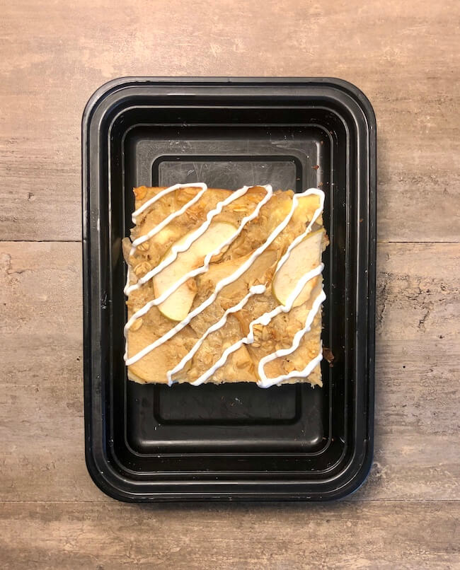

Apple Pie Baked Oatmeal
Apple Pie Baked Oatmeal

Sliced Apples cooked in reduced brown sugar and cinnamon and layered inside of an oatmeal and egg mixture for this Apple Pie Baked Oatmeal. This is a great meal for those weeks you prefer something sweet to have in the morning.
Prep time: 10 Minutes;
Cook time: 40 Minutes; Per serving (Makes 5): 361 calories, 52g C, 18g P, 9g F.
Ingredients
- 3 cups (240 g) old fashioned oats
- 2 scoops (60 g) vanilla protein powder
- 1 tsp (4 g) baking powder
- 4 medium (600 g) apples peeled
- 1/4 cup (48 g) brown sugar
- 1 tbsp (8 g) cinnamon
- 2 tbsp (28 g) butter
- 2 eggl
- 2 cups (480g) skim milk
- 5 tbsp (60g) vanilla Greek yoghurt optional for frosting
Instructions
- For the apples:
- Wash and peel the apples. Cut them in half and remove the cores. Cut them into thin slices.
- Heat a large skillet over medium heat. Add 1 tbsp of butter and then add the apples.
- Sprinkle the cinnamon and brown sugar over the top. Cook until the sugar has reduced and the apples have become soft.
- For the oatmeal bake:
- Preheat your oven to 375oF
- In a large bowl, mix together the oats, protein powder, and baking powder.
- In a separate bowl, whisk together the eggs, milk, and 1 tbsp of melted butter. Pour over the top of the apples and oats and mix.
- Spray a 13"x9" pan with oil and add the oat mixture and apples.
- Bake for 30-35 minutes
- Plating
- This recipe makes 6 servings. Cut the oatmeal into 6 equal pieces. You can use vanilla greek yogurt as a frosting if you wish.